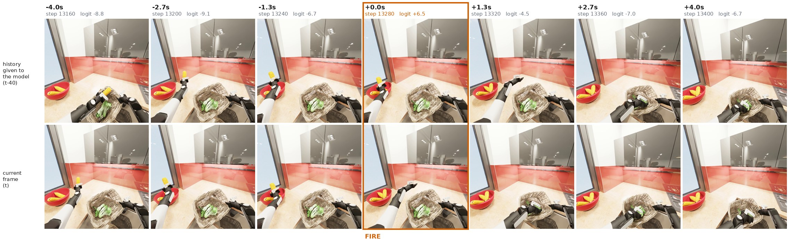
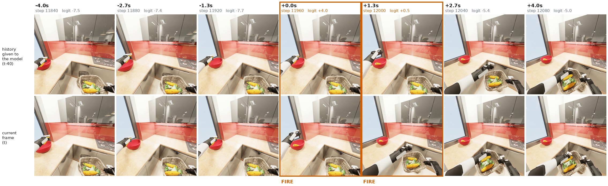

The highlighted stage is the policy's own prediction from its three cameras, made every 0.67 s. It moves up only when a can lands in the bin, and it holds steady while the robot searches. The episode ends the moment the last can goes in, before the policy can predict stage 3, so the final cell comes from the simulator.
The policy sees the current camera views and those from 1.33 s earlier. An event head detects when a BDDL goal literal changes, a counter turns those events into the task stage, and the stage conditions the action expert through the VLM's KV cache.
TL;DR
The 2025 winning solution conditions its action expert on a task stage: an integer saying which phase of the task the robot is in. That integer was defined as a fixed fraction of the episode's total length. At test time the episode length is unknown, so the policy was trained to predict a target it can never observe.
We redefine the stage as the number of BDDL goal literals currently satisfied. This is a function of the world state, so it is defined at every instant, both in training and at deployment. It is also exactly what the benchmark scores. On picking_up_trash the retrained policy reaches a q-score of 0.733.
On long-horizon tasks a single-frame stage predictor fails, and we can say why. One image cannot show that something just happened, and the demonstrations never contain a moment where nothing is happening, so the model never learns to answer "no progress yet". We therefore add history images: the policy also sees its cameras from 1.33 s earlier, and an event head detects goal changes between the two views.
To make this possible at scale, we built a BDDL progress dataset for all 100 challenge tasks: for every one of the 20,000 demonstrations, which goal literals hold at each moment.
The Challenge
A mobile bimanual robot must complete long household activities in the OmniGibson simulator, using only its cameras and its own joint readings.
The 2026 edition covers 100 activities from BEHAVIOR-1K. Each activity is defined in BDDL, a symbolic language. The goal is a conjunction of literals such as inside(carrot_1, bowl_1) or not open(cabinet_1). An episode is scored by q-score, the fraction of goal literals satisfied when it ends. It counts as a success only if all of them are satisfied.
Long horizon. Episodes run for up to several minutes of simulated time. sorting_vegetables has a 10-minute cap and 13 goal literals.
Non-Markovian. Two moments can look alike to the cameras but call for different actions: before the first item is placed and after the last, the scene can look much the same. The policy needs some notion of progress.
Mobile and bimanual. Navigation, two-arm manipulation and articulated objects all appear within a single episode.
Expensive evaluation. At our measured ~0.2 s per simulator step, one pass over all 100 tasks × 10 public instances is on the order of 900 GPU-hours.
Method
Starting point
We build on the winning 2025 solution (Larchenko et al., arXiv:2512.06951). It is a Pi0.5 VLA (SigLIP vision encoder with a Gemma backbone) that replaces the text prompt with learned task embeddings. Its "System 2" predicts the current task stage, and the predictions pass through a voting tracker. The tracked stage is embedded and fed back to the action expert. We start from the released checkpoints, port the data pipeline to the 2026 demonstrations, and change only what the stage means.
Observationshead + 2 wrist RGB, proprioception, task id
→
Pi0.5 VLMSigLIP + Gemma prefix
→
Stage headpredicts # satisfied BDDL literals
→
Stage trackervotes → current stage (never terminal)
→
Action expertflow matching, conditioned on stage
Figure 1. Policy overview. The architecture is unchanged from the 2025 solution. The highlighted stage head is trained on a new target (below).
The problem: a stage that cannot be computed at test time
In the original solution the stage label for demonstration frame t is:
stage = floor(num_stages × t / episode_length)
This requires episode_length, the total length of the episode. It exists only in the offline dataset, after the fact. During a rollout it is undefined. The head is supervised on elapsed-time fractions, but it is asked to report progress in a world where "elapsed fraction" has no referent. Whatever it learns, it is not the quantity it was trained on.
Our fix: count satisfied goal literals
stage = number of BDDL goal literals satisfied in the current state
The simulator already evaluates these literals, because that is how the benchmark scores an episode. We replay every demonstration, evaluate the goal every 30 simulator steps, and store the count as a per-frame label. The stage now changes when something actually happens, not when a clock ticks over.
Time-split stage (2025 baseline)
0
1
2
3
BDDL stage (ours)
0
1
2
3
trash_1 in bintrash_2 in bintrash_3 in bin
Figure 2. Illustration of one demonstration of picking_up_trash. Time-split boundaries fall wherever the clock puts them. BDDL boundaries fall exactly where a goal literal becomes true. Durations are illustrative.
Time-split stage
Needs the episode's total length → undefined during a rollout.
Same label for "walking to the bin" and "dropping the item" whenever they fall in the same time slice.
BDDL stage
A function of the observable world state → defined at every instant, in training and at inference alike.
Measures the same thing the benchmark scores.
A free, exact evaluation signal
The q-score is the fraction of satisfied literals, so for a task with N goal literals, q_score × N gives the stage an episode ended in, exactly, as an integer. Every rollout we have ever run is therefore labelled ground truth for the stage predictor. We can measure stage-prediction changes offline from logged rollouts without spending simulation time. The analysis below uses this signal.
Terminal-stage clamp
The evaluator ends an episode as soon as every literal holds. So while an episode is still running, a reading of the terminal stage can only be a false positive. Acting on it tells the policy it is done, and it stops. We never condition the action expert on the terminal stage: the tracked stage is clamped to N−1 for tasks with three or more stages.
History images and an event head
A single frame shows a state, not a transition. BDDL labels also trail the event that caused them by up to a second, so by the time a label changes the action is already over. To let the model see change directly, we pair every observation with the past.
History images. Alongside the current head and wrist views, the policy receives the same three cameras from 40 frames earlier (1.33 s, exactly two policy queries). That frame is the observation from two queries ago, so we cache it: no extra inference and no change to the simulator interface. The history tokens are appended after the current views, so the pretrained cameras keep their token positions.
Event head. A linear head on the same task token as the stage head answers one binary question: did a BDDL goal literal change during the last 1.33 s? About 96% of training windows contain no change, so the head learns, from most of its examples, what "nothing happened" looks like. The rare positives are up-weighted in the loss.
Counting events. The stage is the number of detected events. We count only rising edges, because overlapping windows fire twice for one event, and ignore new detections for 12 queries (8 s) after each one. On sorting_vegetables a real stage lasts 43 queries on average, so this misses nothing real but puts a hard limit on how fast the stage can climb.
The original stage head is kept as an auxiliary output, and both heads are logged on every query, so the two readouts can be compared directly against q_score × N. The architecture figure at the top of the page shows the full pipeline.
Results
Rollouts of our policy in the OmniGibson simulator, sped up.
It Really Does Catch the Moment of Placement
Two detections from a single sorting_vegetables rollout, shown as the policy saw them. Each column is one query, 1.33 s apart; the top row is the earlier view the model is given, the bottom row the current one. The query where the event head crossed its threshold is boxed.
Because the columns are spaced by the same 1.33 s that separates the two views, each column's top image is the previous column's bottom image: the strip reads as one continuous sequence, and the pair inside any column is exactly what the model compares.

A second ear of corn enters the bowl. The count in the bowl goes from one to two between the two images of the boxed query, and the event logit jumps from −6.7 to +6.5 and falls back to −4.5 one query later. Nothing else in the strip crosses the threshold.

The first ear of corn enters an empty bowl. Here the head fires twice for one placement — at the query where the corn appears and again 1.33 s later, while the two views still straddle the change. That double count is why the counter takes only rising edges and then pauses before it will count again.
These are the detections working as designed: the stage advances because something measurable happened in the scene, not because time passed. The same strips also show the two ways the signal is still imperfect — one real placement can trigger more than one detection, and a large change that satisfies no goal literal, such as the robot lifting a bowl or turning until one enters view, looks much the same to a head trained on pairs of images.
Why It Fails Without History Images
We use q_score × 13 as exact ground truth and look at what the single-frame stage predictor actually outputs during sorting_vegetables rollouts.
The policy asks "which stage are you in?" every 20 simulator steps (0.67 s), which comes to 893 times per episode. Pick an episode below:
stage head argmax (every query)voting-tracker stagestage the episode actually reached (q × 13)
4.6
true stage changes per episode (at most)
175
times the predicted stage changes per episode
+3.9
mean overshoot of the tracker's final stage
57%
of predictions above any stage the episode ever reached
The voting tracker promotes on 2 of 3 votes and can skip two stages at once. It demotes only on 3 of 3 votes, and only by one stage. A rapidly fluctuating input therefore ratchets upward. When the tracker reports stage 12 while the true stage is 4, the action expert is told that twelve items are already sorted. It then executes behaviour unrelated to the scene in front of it.
The root problem is what one frame can show. In the demonstrations the stage always advances, so the head learns cues that track elapsed time. A stalled robot looks like nothing it has seen, and it has no way to answer "no progress". History images and the event head target exactly this gap: the change, or its absence, is visible between the two views.
BDDL Progress Dataset
Symbolic goal progress for every demonstration of the 2026 challenge: which BDDL goal literals hold at each moment, for all 100 tasks.
The official demonstrations ship observations and actions, but no record of what the task symbolically required or when each requirement was met. Their reward channel only marks a change in the number of satisfied predicates, so absolute progress often cannot be recovered from it. Our stage labels, and the offline evaluation in Analysis, both depend on that missing record, so we built it.
100
challenge tasks, complete coverage
20,000
demonstrations, 200 per task
552
goal literals across all tasks (largest solution option of each)
1 s
timing resolution: literals evaluated every 30 simulator steps
How it is built
Restore, don't re-simulate. Each recorded simulator state is loaded back into OmniGibson. One physics step propagates transforms so that geometric predicates such as inside and ontop are evaluated against the live scene. Recorded object transitions (slicing, dicing, cooking) are replayed in order.
Evaluate every goal literal. The compiled BDDL goal is grounded into its solution options, and the truth of every literal is stored, using the same grounding the official scorer uses for partial credit.
Store one HDF5 file per demonstration, keyed by (task_id, demo_id), with the simulator step of every row so it joins exactly onto the full-rate demos.
task-XXXX/bddl_<demo_id>.hdf5
data/frame (N,) simulator step of each row
data/atom_status (N, A) truth of each ground goal literal
data/initial_atom_status (A,) truth at frame 0
data/q_score (N,) official partial credit
attrs: task_id, task_name, demo_id, atom_labels, atom_option, option_sizes, ...
What the 100 tasks look like
Goal literals per task
Number of tasks, by the size of their largest solution option
Goal literals by predicate
Summed over all 100 tasks
Most goals are about where objects end up: inside and ontop account for more than 60% of all literals. Goal sizes range from a single literal (11 tasks, such as turning_on_radio) to 26 (cook_brussels_sprouts).
Progress is not always monotone. In 38% of demonstrations the number of satisfied literals drops at least once. One cause is a goal that already holds at the start and has to be broken on the way. In bringing_water, not open(refrigerator) is true until the robot opens the fridge, and true again once it closes it. The table reports this per task.
All 100 tasks
Select a task to see its goal literals. Solution options are the distinct groundings of the goal that the scorer accepts. Demo length is the mean over 200 demonstrations. Monotone demos are those whose satisfied-literal count never decreases.
Future Work: Force Data in progress
The BDDL dataset says what changed and roughly when. Most of those changes are contact events, and contact is something the robot can feel before it can see it.
We are building a companion torque dataset for the same 20,000 demonstrations. Each raw teleoperation demo is replayed with physics on, teacher-forced along the recorded trajectory (divergence around 4×10−4 rad, effectively none), at the simulator's natural frequency so contact transients stay physically plausible.
Channel
Per step
What it measures
joint_qeffort
28
Net joint torque measured by PhysX
joint_gravity
28
Gravity torque g(q)
joint_coriolis
28
Coriolis and centrifugal torque c(q, q̇)
contact residual
28
measured − gravity − Coriolis: contact, friction and inertial torque
joint_qpos, joint_qvel
56
Full joint state alongside the 61-D challenge proprioception
Each sidecar is about 2–3 MB per episode and joins onto the demos and the BDDL dataset on (task_id, demo_id, step), at the full 30 Hz.
Where we are taking it
Sharper event timing. BDDL literals are sampled once per second, while grasps, releases and insertions show up in the torque residual at 30 Hz. Aligning the two should pin each goal change to the contact that caused it.
Force-aware event detection. A can dropping into a bin, or a door clicking shut, is often occluded or tiny in the cameras. Adding torque tokens to the event head gives it a second, non-visual cue for "something just happened".
Vision-only vs. force-aware policies. With torque recorded for every demonstration, the same tasks can be trained with and without force input, or with force as an auxiliary prediction target, to measure what contact information is worth on long-horizon household tasks.
Summary
Ground the stage signal in the task definition. Counting satisfied BDDL literals replaces a target that cannot be computed at test time with one that is always defined, and it aligns what the model tracks with what the benchmark scores.
A BDDL progress dataset for all 100 tasks. Goal-literal status for all 20,000 demonstrations, built by restoring each recorded state and evaluating its BDDL goal. It supplies the stage labels and makes task progress measurable everywhere in the benchmark.
q-score is free ground truth for stage prediction. Every past rollout becomes a labelled evaluation for the stage tracker, so we can iterate without new simulation.
Teach the model what "no progress" looks like. Demonstrations always make progress, so a stage classifier never learns that nothing has happened. Our two-frame event head compares the current views with those from 1.33 s earlier and asks only whether a goal literal just changed, so 96% of its training examples teach exactly that answer. Counting detected events then yields a stage that advances only on observed change, at a bounded rate.